Monte Carlo - 03/06/1984
AYRTON, QUASE, QUASE...
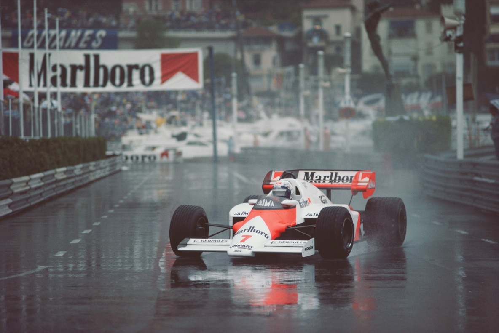
Corrida é parada por causa de chuva com Prost no comando quase perdendo para Ayrton. Pontuação reduzida pela metade devido às condições atmosféricas adversas. Equipe Renault destruída na largada. Prova sensacional de Bellof. Brundle escapa de violento acidente nos treinos.
Autocorse
A imagem popular de Mônaco como o playground ensolarado dos milionários, situado à beira do Mar Mediterrâneo, sofreu uma grande reviravolta para os espectadores e participantes durante o Grande Prêmio de 1984. Pode surpreender alguns entusiastas do automobilismo, mas o fato permanece que quando chove na Côte d'Azur, pode chover tão intensamente quanto em Silverstone ou Thruxton durante uma reunião de clube no final de outubro. Assim, foi em condições absolutamente diabólicas de chuva torrencial, visibilidade reduzida e poças traiçoeiras que essa corrida clássica de automobilismo foi interrompida prematuramente, após apenas 32 das planejadas 77 voltas terem sido completadas. Mas as condições deprimentes e de dilúvio eram insignificantes em comparação com as comportas de controvérsia que se abriram imediatamente após o Diretor de Prova Jacky Ickx tomar a decisão de interromper a corrida. A FISA, em guerra com os organizadores de Mônaco por questões tão importantes como a atribuição dos direitos de cobertura televisiva, viu a desventura dos organizadores como uma oportunidade de ouro para lançar uma enxurrada de invectivas críticas que levariam muitos meses para diminuir. Foi um caso clássico de vantagem política obscurecendo as realidades imediatas da corrida...
Fato número um: Alain Prost qualificou sua McLaren MP4/2 brilhantemente na pole position e liderou quase o tempo todo até a bandeira quadriculada, sua abordagem super sensível mantendo-o na pista enquanto muitos de seus rivais mergulhavam em rotas de escape ou batiam no muro. Fato número dois: o britânico Nigel Mansell qualificou na primeira fila do grid de largada pela primeira vez ao volante de seu Lotus 95T e liderou uma corrida pela primeira vez antes de cometer um erro e bater, encerrando sua corrida contra a inabalável barreira de proteção. Fato número três: Ayrton Senna pilotou de forma brilhante ao volante de seu Toleman TG184 e estava diminuindo a vantagem de Prost quando a corrida foi interrompida. Mais algumas voltas e ele teria assumido a liderança.
Indiscutivelmente, a pessoa mais solitária em Mônaco após o Grande Prêmio foi Jacky Ickx, embora ele, mais do que qualquer pessoa fora dos atuais cockpits da Fórmula 1, soubesse em primeira mão como as condições da pista deveriam ter sido em todo o circuito. Sua decisão de interromper a corrida foi criticada por muitas pessoas no calor do momento, mas, após uma reflexão tranquila, não foi realmente o tipo de ação extravagante e tendenciosa que poderia parecer. Ickx foi acusado de favorecer os franceses (improvável, quando se considera que a FISA e a ACM estavam em pé de guerra!) ou, de forma mais absurda, favorecer um motor construído pela Porsche no carro líder, levando em consideração suas conexões com a Rothmans Porsche (um insulto absoluto à integridade do belga). Os fatos concretos eram que Prost foi o único piloto a não cometer erros, seja durante os treinos ou a corrida, e mereceu a vitória. Senna foi brilhante, provando sua habilidade natural ao volante de um carro de Fórmula 1 além de qualquer dúvida. Seu momento certamente chegaria, mas hoje, indiscutivelmente, pertencia a Alain Prost.
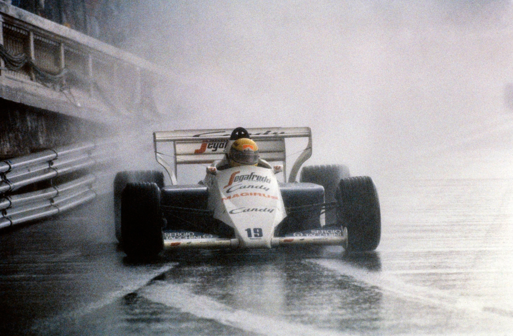
OS TREINOS
Além do debate político sobre o futuro do Grande Prêmio de Mônaco, no qual a FISA informou à Automobile Club de Monaco que teria que reaplicar para inclusão no calendário internacional de 1985 como se fosse um evento totalmente novo (a penalização por não alinhar seus acordos de cobertura televisiva com os termos do Acordo de Concorde), houve uma irritação mais imediata assim que os carros apareceram para os treinos na sinuosa pista de rua de 3,292 metros. O antigo hábito de realizar uma sessão de pré-classificação antes do início dos treinos oficiais foi dispensado, deixando nada menos que 27 competidores para disputar 20 posições no grid de largada durante as duas horas de qualificação na quinta-feira e no sábado à tarde. Essa anomalia virtualmente garantia que as sessões de qualificação cronometrada seriam mais perigosas e lotadas do que a própria corrida, e levantava a questão de por que permitir que 26 carros largassem em lugares como Detroit, mas não em Mônaco?
Antes do início dos treinos, a McLaren estava observando toda a situação com alguma cautela, um pouco preocupada que o contínuo problema de atraso mínimo no acelerador no motor turbo TAG pudesse causar dificuldades para Alain Prost e Niki Lauda. No entanto, Prost dissipou essas dúvidas da forma mais impressionante possível: durante a última hora de qualificação, ele marcou 1m22.661s com seu MP4/2 para garantir a pole position, fora do alcance de todos os seus rivais. Tanto Prost quanto seu companheiro de equipe Lauda desfrutaram de dois dias tranquilos de treinos - uma mudança agradável
, comentou o austríaco com um sorriso, e o tempo do francês foi nada menos que 2,2 segundos mais rápido do que da sua pole no ano anterior com o Renault RE40. Lauda, prejudicado pela Spirit 101B de Mauro Baldi durante sua segunda tentativa de qualificação na última sessão, terminou em oitavo lugar com 1m23.886s.
Embora Prost tenha brilhantemente representado a Michelin, a Goodyear se mostrou em excelente forma neste circuito de rua com uma nova cobertura de construção frontal que havia sido descoberta por Patrese durante os testes da Alfa Romeo em Imola
. Instalada nos Lotus 95Ts, ficou claro que era muito eficaz, e Nigel Mansell, que adora Mônaco, a usou com sucesso para se qualificar ao lado da McLaren na primeira fila. Assim como todos os outros pilotos que usaram Goodyear, Nigel usou três pneus de qualificação em conjunto com um pneu traseiro esquerdo mais duro no composto "C", uma artimanha inicialmente testada no Ferrari C4 de Alboreto na tentativa de obter mais de uma volta rápida; um fator importante em um circuito como este, com a constante possibilidade de ser atrapalhado por carros mais lentos.
Na quinta-feira, Mansell não teve uma volta limpa, e na sessão de sábado de manhã, colidiu brevemente com a Ferrari de Arnoux e depois tocou a chicane com as duas rodas dianteira. Então, aparentemente para coroar tudo, seu carro reserva, equipado com o pneu traseiro esquerdo Goodyear mais duro, sofreu uma falha no motor no início da última sessão de qualificação e deixou Mansell parado na entrada do túnel. Ele correu de volta aos boxes, onde seu carro de corrida, equipado com um motor novo para o Grande Prêmio, estava esperando. "Não pude usar o motor de qualificação e tinha apenas um jogo de pneus macios de qualificação para todas as voltas",
refletiu Nigel, "então eu sabia que teria apenas uma chance."
O que se seguiu foi Mansell em sua melhor forma, o Lotus 95T preto e dourado praticamente raspando os guard rails do Principado para completar sua melhor volta em 1m22.752s e garantir o segundo lugar no grid. Por outro lado, seu companheiro de equipe Elio de Angelis nunca se sentiu tão à vontade no pequeno circuito, o italiano passou a maior parte do tempo reclamando de subesterço indesejado e não conseguiu melhorar do 11º lugar com 1m24.426s.
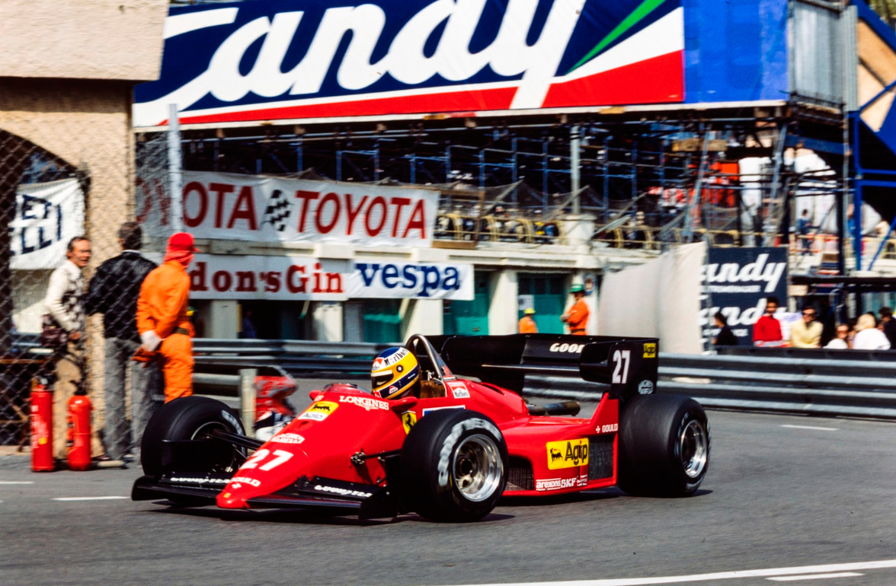
Com um quarteto de 126504s à disposição, incluindo um chassi novo (075) para Alboreto, a equipe Ferrari estava confiante no início da qualificação. Mais testes em Imola revelaram que o sistema de injeção de combustível eletrônico Marelli-Weber ainda não estava pronto, então os quatro carros continuaram a usar o sistema mecânico Lucas e o designer do chassi C4, Harvey Postlethwaite, estava presente para ajudar Mauro Forghieri. Muitas pessoas achavam que a Ferrari produziria motores especiais "específicos para Mônaco" para fornecer torque extra para o circuito apertado, mas Postlethwaite insistiu que os motores V6 eram exatamente os mesmos utilizados duas semanas antes em Dijon. Alboreto e Arnoux tiveram o que poderia ser melhor descrito como um tempo acrobático durante a qualificação. Michele fez o melhor tempo durante a sessão de uma hora na quinta-feira antes de manchar seu caderno de multas no sábado, quando bateu no muro na Saint Devote, desalinhando uma roda dianteira. Arnoux, de alguma forma, conseguiu contornar a rápida chicane à beira-mar sem bater em nada e acabou à frente de seu companheiro de equipe com o terceiro tempo mais rápido em 1m22.350s, uma fração escassa mais rápido do que Alboreto.
Lado a lado na terceira fila do grid estavam os dois Renault Elf RE50 de Derek Warwick e Patrick Tambay, com o inglês superando seu companheiro de equipe para garantir o quinto lugar nos últimos cinco minutos da segunda sessão. O uso de turbocompressores Garrett menores deu aos carros franceses uma impressionante resposta ao acelerador em Mônaco, e ambos os pilotos estavam geralmente satisfeitos com seus carros, embora um choque com o Arrows de Boutsen na quinta-feira de manhã tenha afetado um ponto de suspensão dianteira do carro de Patrick e o obrigado a usar o carro reserva pelo resto do dia. Uma terceira marcha quebrada - fez um barulho terrível e eu pensei que era o turbo!
atrapalhou o progresso de Warwick na quinta-feira, e ele também teve um susto quando subiu o morro após a Casino Square e encontrou o ATS D6 de Manfred Winkelhock (o carro reserva do alemão) parado como um monte de destroços após bater na proteção.
Andrea de Cesaris manteve a calma nas apertadas ruas de Mônaco e registrou um tempo de 1m23.578s, o sétimo mais rápido. O italiano geralmente explosivo sobreviveu a um leve toque com seu igualmente volátil compatriota Riccardo Patrese durante a última sessão, mas, caso contrário, se manteve limpo de forma louvável. Seu companheiro de equipe, François Hesnault, superou sua óbvia decepção por ser "afastado" em Dijon e manejou seu JS23 para se qualificar em um razoável 17º lugar em sua primeira visita ao Principado ao volante de um carro de Fórmula 1.
Problemas de controle de impulso do turbo e um manuseio apenas razoável deixaram o Campeão Mundial Nelson Piquet em nono lugar ao volante de seu Brabham BT53, enquanto a ausência de Teo Fabi (ele estava na corrida da CART em Milwaukee) significou que seu irmão mais novo, Corrado, Campeão Europeu de Fórmula 2 de 1982, finalmente teve a chance de experimentar um desses carros com motor BMW na frente de uma plateia. Foi um pouco difícil para o jovem italiano, que tinha apenas uma sessão em Nogaro quando se tratava de testes recentes com a Brabham, e é preciso dizer que toda a filosofia de compartilhar a segunda entrada do BT53 entre os dois irmãos não estava sendo satisfatória para nenhum deles. Problemas elétricos persistentes que eventualmente o deixaram parado na pista fizeram com que o confuso Corrado fosse dormir na quinta-feira sem se qualificar, mas ele conseguiu encaixar uma volta respeitável de 1m25.290s para garantir a 15ª posição durante a sessão de classificação de sábado. Em comparação com o desempenho de Nelson - no carro "de classificação" sobressalente da equipe - o jovem Fabi certamente não se envergonhou.
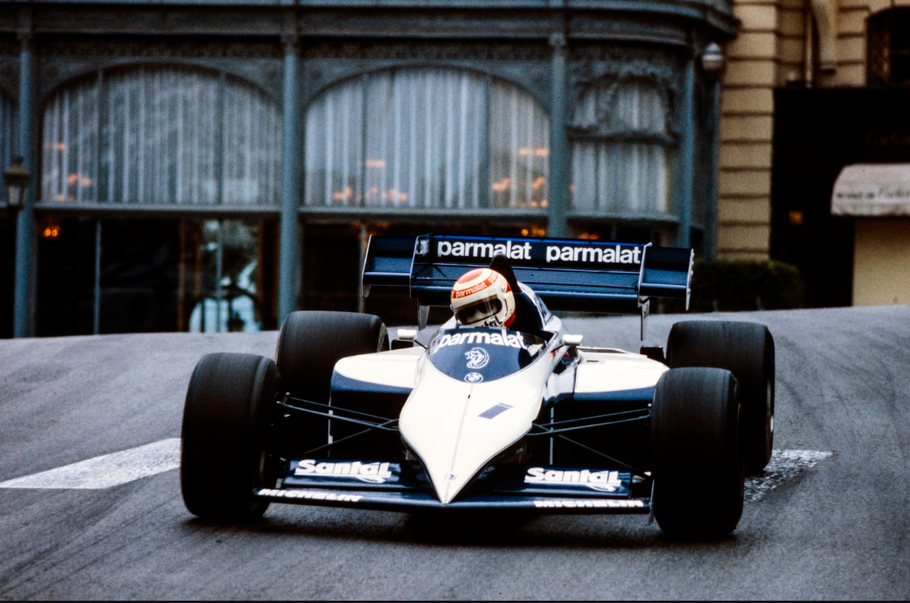
No box da Williams, a esperança ainda estava presente de que o FW09, por algum milagre técnico noturno, pudesse ser transformado em algo competitivo. Keke Rosberg estava tentando como só Keke sabia, mas até esse tipo de esforço inspirado parecia desperdiçado neste carro problemático, que parecia subesterçar, subesterçar, subesterçar, não importando qual combinação de molas e barras estabilizadoras fosse adotada pela equipe. Os FW09 estavam quase queimando os pneus dianteiros em uma única volta, tamanho era o desequilíbrio de manuseio com o qual ambos os pilotos tinham que lidar, e a contribuição mais espetacular do Campeão Mundial de 1982 para a última hora de classificação foi quando ele dirigiu lentamente de volta aos boxes deixando para trás uma nuvem de fumaça branca densa que anunciava, inconfundivelmente, uma grande falha no turbo. Conforme a fumaça se dissipava, Rosberg foi colocado no carro "de classificação" sobressalente da equipe para mais uma tentativa, que logo foi frustrada pelo motor Honda V6 que parou abruptamente. Felizmente para Keke, uma pausa inesperada nos acontecimentos seguiu ao violento acidente de Martin Brundle na frenagem para a curva Tabac, e os rapazes da Williams tiveram tempo suficiente para substituir o turbo defeituoso no carro de corrida. Rosberg finalmente se classificou em décimo lugar com 1m24.151s, com o companheiro de equipe Jacques Lafitte em 16º com 1m25.719s. Nenhum dos dois ficou impressionado com o carro e cada um expressou seus sentimentos à equipe à sua maneira encantadora!
A atitude sempre otimista da equipe Toleman foi intensificada pela chegada do mais recente desenvolvimento do motor Hart 415T, completo com "sistema de gerenciamento" eletrônico e quatro injetores por cilindro. Embora uma abordagem conservadora tenha sido adotada para a quantidade de pressão de impulso aplicada durante sua saída no treino não cronometrado de sábado, Ayrton Senna relatou que ele era definitivamente mais responsivo do que os motores padrão. Após esses testes iniciais em um ambiente competitivo, o novo motor Hart no carro sobressalente foi deixado de lado, e o brasileiro continuou a se classificar em 12º com 1m25.009s ao volante de seu carro de corrida regular equipado com uma especificação regular 415T. Cecotto estava, como se tornou costume, significativamente mais lento do que seu companheiro de equipe, com 1m25.872s, o 18º mais rápido dos 20 carros no grid.
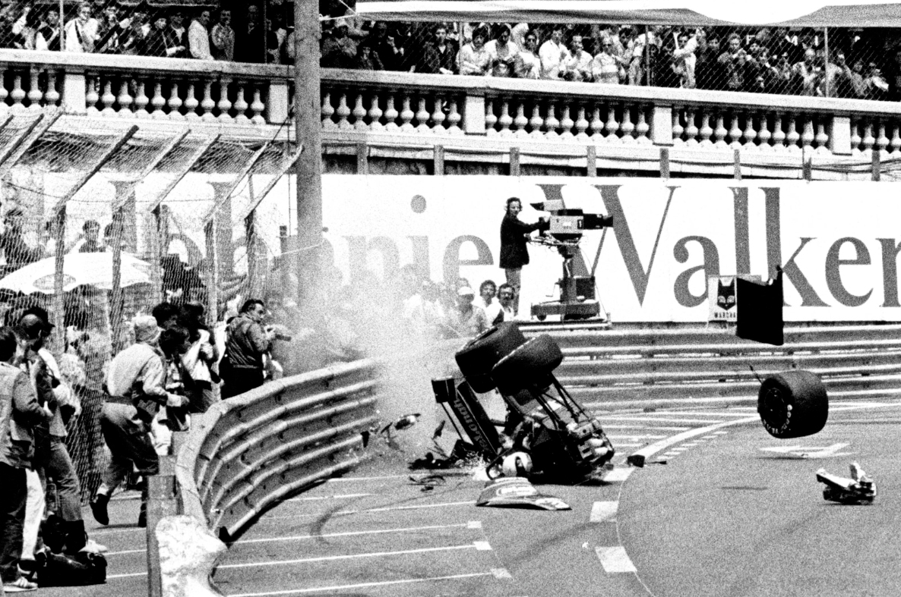
Antes da corrida de Mônaco, havia confiança entre os poucos pilotos com motores Cosworth de que seus carros ágeis poderiam representar ameaças realistas nesse circuito de rua apertado. Isso não se mostrou verdadeiro - esse argumento talvez tenha esquecido os benefícios obtidos pela pura e inalterada potência do turbo na longa subida da Saint Devote até o Casino. No acampamento da Arrows, a atração pelo poder do Cosworth DFV realmente levou Marc Surer a optar pelo chassi mais antigo, o A6, mas ainda mais era esperado dos Tyrrell 012 de Stefan Bellof e Martin Brundle. A brigada não turbo teve um choque desagradável. Apenas Bellof conseguiu se classificar, o último dos 20 classificados, e Brundle se envolveu em um acidente horrível enquanto lutava pelas últimos décimos que o levariam ao grid. Até o momento em que ele acionou os freios para a curva Tabac, sua última volta de classificação estava absolutamente estupenda. Senti que tinha feito tudo exatamente certo
, ele confessou mais tarde com pesar. Não errei em nada e passei pela chicane sensivelmente mais rápido do que em qualquer outra volta. Então, acionei os freios e acho que encostei o pedal do acelerador com a borda da minha bota.
A partir desse momento, Brundle estava fora de controle de uma grande maneira: seu Tyrrell atingiu a proteção da pista em um ângulo agudo e voltou para o meio da pista, sem as rodas do lado direito, quase de cabeça para baixo. Os fiscais correram para endireitar o carro totalmente destruída e Brundle, gravemente machucado e abalado, foi rapidamente liberado do carro. Ele não conseguia se lembrar de correr de volta aos boxes e se preparar para assumir o carro sobressalente. Só quando percebi de repente que não sabia em qual circuito estava, decidimos que provavelmente não era sábio sair novamente
, sorriu Brundle. O monocoque de fibra de carbono compósito/liga de mel da Tyrrell protegeu o piloto de forma encorajadora durante este impacto dramático. Ao lado do carro com motor Cosworth de Bellof na última fila do grid estava o Osella de Piercarlo Ghinzani, deixando ambos os Arrows, com motores Cosworth e BMW turbo, nas fileiras dos não classificados. Eddie Cheever simplesmente não conseguiu fazer seu motor V8 da Alfa Romeo ter um desempenho remotamente respeitável, então ele não chegou nem perto do tempo de classificação de 1m 25.101s de seu companheiro de equipe Patrese, o que o deixou extremamente frustrado. Não surpreendentemente, outros não classificados foram os lentos RAM 02 de Palmer e Alliot, juntamente com o Spirit de Baldi.
A CORRIDA
À medida que o domingo amanhecia, a maioria dos pilotos deve ter desejado simplesmente virar e voltar a dormir pelo resto do dia: a até então ensolarada cena de Monte Carlo havia se transformado em uma miséria sombria, molhada e desanimadora. Era um daqueles dias em que nuvens baixas obscureciam o topo dos penhascos imponentes atrás do Principado: um dia em que todos sabiam que choveria incessantemente por muitas, muitas horas. Além do fato óbvio de que essa mudança repentina no clima transformou o já exigente circuito de rua em uma pista de patinação, outro problema menor surgiu. O setor do túnel que passa sob o chique Hotel Loews, durante o aquecimento não cronometrado, "Virou algo como um oásis no deserto após uma chuva de verão", citou um dos competidores. Para garantir que todo o circuito estivesse "uniformemente molhado", um caminhão de água foi chamado para molhar essa seção fechada do circuito, atrasando assim o início em cerca de 15 minutos. Claro, em poucas voltas, uma linha seca começou a aparecer nesse setor e o problema inicial voltou!
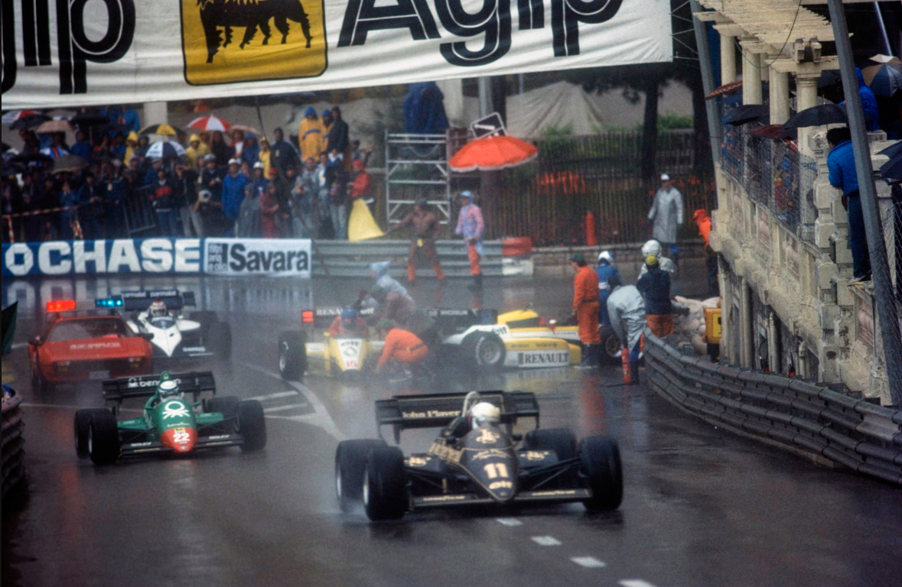
Enquanto Prost liderava o pelotão na volta de apresentação, enormes jatos de água eram lançados pelos pneus enormes dos carros de Fórmula 1, o Diretor de Prova Jacky Ickx deve ter voltado a pensar nesta mesma corrida, 12 anos antes, quando ele era reconhecido como o especialista sob chuva. Naquela famosa tarde, seu Ferrari 312B2 teve que ceder para o azarão Jean-Pierre Beltoise da BRM P160. Talvez Mônaco 84 resultasse em uma reviravolta semelhante em relação à forma estabelecida...
Suave e previsivelmente, Prost levou seu McLaren MP4/2 suavemente para a liderança quando a luz de largada ficou verde. Mansell o seguindo de perto na área de frenagem para a chicane Saint Devote. De sua posição na terceira fila do grid, Warwick teve uma ótima largada e se aproximou da terceira posição à medida que o pelotão se enrolava na curva; infelizmente, ele tinha o intransigente Ferrari de Rene Arnoux à sua direita, e o francês escorregou na guia direita, empurrando seu Renault na barreira de pneus do lado oposto da pista. Tambay, também procurando um caminho, saiu da curva em uma linha ligeiramente mais larga e se deparou com um caminho inevitável direto para o carro de seu companheiro de equipe. Ambos os RE50s estavam fora da corrida no local e Warwick não ficou nada animado quando viu que a frente do monocoque de fibra de carbono de se carro estava quebrada com o impacto. Quanto ao pobre Patrick, um braço inferior entrou no assoalho durante o acidente (como tinha acontecido duas semanas antes no acidente de Derek no GP da França), quebrou sua fíbula, um pequeno osso na parte de trás de sua perna esquerda. Como um detalhe adicional a tudo isso, o Ligier de Andrea de Cesaris foi empurrado com força na traseira por Hesnault, seu companheiro de equipe, resultando no abandono de Andrea no final da primeira volta. Três concorrentes com motores Renault fora da corrida logo após a largada...
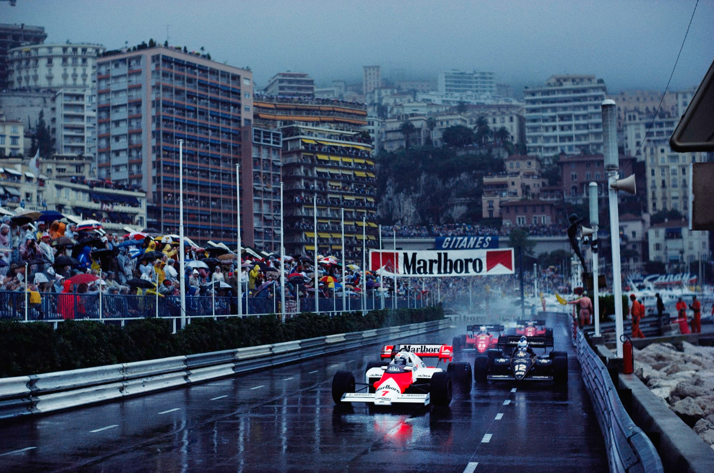
No final da primeira volta, a ordem era Prost, Mansell, Arnoux, Alboreto, Lauda, Rosberg, Winkelhock, Laffite, Senna, Fabi, Bellof, Ghinzani, Piquet, com de Angelis e Patrese um pouco atrás após serem obrigados a parar e recuar do desastre com os Renault. Prost parecia totalmente no controle, completamente calmo e confiante, e como realmente não parecia haver muita chance de ser desafiado, a maioria da atenção se concentrou inicialmente nos esforços de Lauda para ultrapassar os Ferraris, uma tarefa que ele concluiu na sétima volta depois de passar Alboreto na frenagem para a Loews e Arnoux em uma manobra ousada na subida da Saint Devote. Uma vez firmemente estabelecido em terceiro lugar, Lauda se acalmou para correr sozinho, permitindo que a atenção se voltasse para os novatos Senna e Bellof, que se adaptavam admiravelmente às condições de chuva torrencial, tornando sua relativa falta de cavalos irrelevantes. Ambos estavam demonstrando um brio deliciosamente desinibido, uma magnífica mistura de controle de carro irrestrito e entusiasmo alegre, assisti-los fez lembrar de nomes reverenciados como Peterson, Villeneuve... No final da sétima volta, Senna estava em sétimo lugar e, a partir desse ponto, parecia estar ultrapassando seus rivais com a facilidade de um veterano. Quando Alboreto rodou e parou brevemente sua Ferrari, ele ganhou mais uma posição e ultrapassou o Williams de Rosberg que estava com problemas, na volta 12 - apesar de ter tido uma escapada na chicane na volta anterior, quando saiu da linha e lançou seu Toleman em um breve voo louco sobre a guia da calçada. O impacto entortou a suspensão dianteira direita, "esticando" a barra de tração. Resumindo, ele teve sorte de sair ileso.
Na volta 11, quando Prost contornou a Portier e acelerou em direção ao túnel, ele acabara de ultrapassar Alboreto e se deparou com o Brabham BT53 de Corrado Fabi, que havia rodado e estava parado no meio da pista. Mais preocupante, à medida que ele passava pelo estreito espaço, o McLaren de Prost roçou um fiscal que estava tentando mover o Brabham parado. O fiscal não ficou gravemente ferido, apenas machucado e muito assustado, mas toda a confusão permitiu a Mansell assumir a iniciativa e ele colocou seu Lotus 95T na liderança. Prost não estava em posição real de reagir, pois os freios de carbono do seu McLaren estavam agarrando devido a um acúmulo irregular de calor nessas condições diabólicas, então os entusiastas britânicos sentaram-se e se deleitaram com a visão de Mansell liderando a primeira corrida de sua carreira. O momento de glória de Nigel durou apenas seis voltas. Francamente, o inglês estava rápido demais quando não precisava. Ele estava se afastando de Prost desnecessariamente dois segundos por volta quando perdeu o controle nas marcadas faixas brancas escorregadias na subida de Saint Devote em direção ao Casino e bateu nos guard rails. Em um esforço desesperado para continuar com seu carro seriamente danificado, ele seguiu até Mirabeau, onde rodou novamente, devido a um pneu traseiro furado e um aerofóleo danificado. Mais 25 metros e ele abandonou seu Lotus, amargamente desapontado, mas indignado que o que ele considerava um erro tão pequeno tenha tido consequências tão enormes. Os perigos do automobilismo!
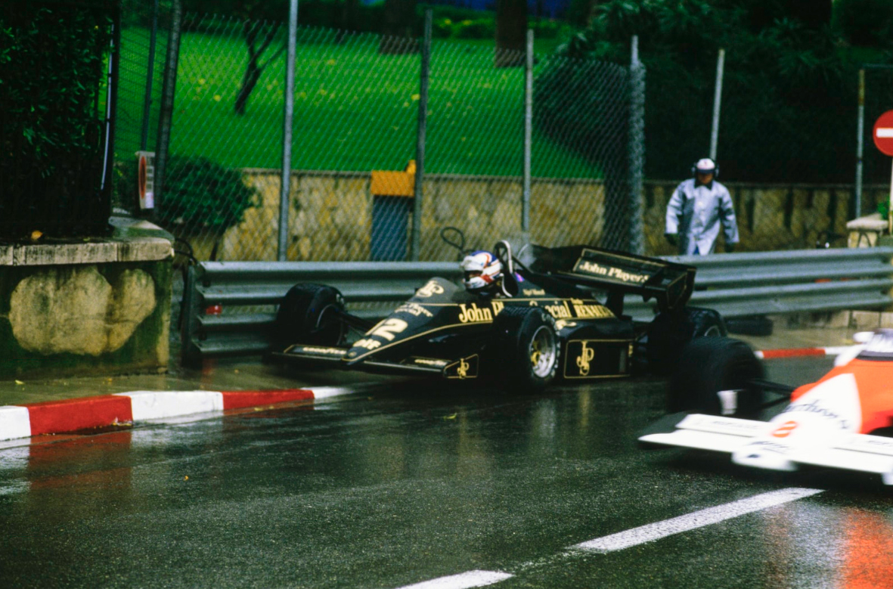
Como se para comprovar o quão escorregadia estava realmente a superfície de Mônaco, Niki Lauda rodou da segunda posição na volta 24, quando entrou na Casino Square. Algumas voltas antes, Niki havia lidado com um travamento da roda traseira, mas o veterano austríaco foi grande o suficiente para assumir toda a culpa pelo incidente. McLaren sem problema, tudo culpa de Lauda!
ele disse. Enquanto isso, a chuva ficava mais intensa. Mas quanto mais forte ficava, pior era a visibilidade, então Senna e Bellof pareciam cada vez mais rápido. Aproximando-se da marca de 30 voltas, o brilhante líder da equipe Toleman estava em segundo lugar, e não era necessário ser um gênio matemático para calcular que ele alcançaria facilmente o McLaren de Prost, o líder, em poucas voltas. Além disso, o incrível Bellof estava tirando tempo dos dois, então parecia que na época em que Senna alcançasse o McLaren, o Tyrrell alcançaria ambos!
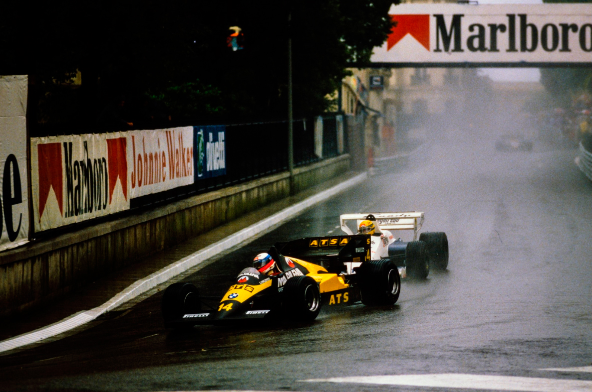
Infelizmente, a corrida logo chegaria ao fim. Observando as condições da pista em todo o circuito nos monitores de televisão na linha de chegada, Jacky Ickx decidiu que a corrida havia ido longe o suficiente. No final da 32ª volta, ele deu instruções para que a bandeira vermelha fosse mostrada na linha de chegada, assim como Senna estava chegando rapidamente na traseira de Prost. Na verdade, o brasileiro ultrapassou virtualmente o McLaren que estava desacelerando na linha, mas como os resultados nessas circunstâncias são levados em consideração no final da volta anterior (ou seja, a 31ª), o aparente sucesso de Senna era acadêmico. O brasileiro foi classificado em segundo, o brilhante Bellof em terceiro. Eu estava tendo problemas com os meus freios
, confessou Prost depois. Eu teria deixado Senna me ultrapassar. O campeonato é mais importante.
À medida que os seis primeiros colocados restantes lutavam para terminar na ordem de Arnoux, Rosberg e de Angelis, as reclamações começaram. Algumas pessoas reagiram exageradamente e viram isso como uma conspiração dos franceses. Os franceses? Os organizadores monegascos estavam em guerra com os franceses na forma da FISA, e quando Jean-Marie Balestre decretou pomposamente que o ACM e Jacky Ickx estavam fora de ordem na maneira como lidaram com a interrupção prematura da corrida, o clube de Mônaco praticamente disse à FISA para "ir se catar". Se os comissários da FISA estavam tão insatisfeitos, disse o ACM, por que eles aprovaram os resultados oficiais? Ah, sim, e a propósito, Balestre, você aprovou a nomeação de Ickx como Diretor de Prova! Ponto válido! Em poucas semanas, grande parte dessa agitação foi esquecida. Prost havia vencido o Grande Prêmio de Mônaco, truncado ou não; o único piloto a não cometer um único erro durante toda a tarde.
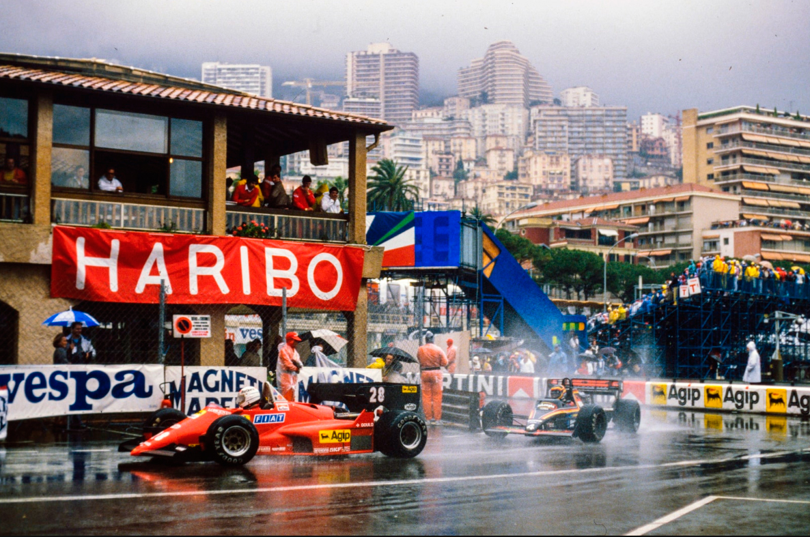
O assunto de Mônaco e a interrupção do Grande Prêmio continuaram sendo tópicos de discussão duas semanas depois em Montreal. A corrida deveria ter sido interrompida? Se sim, deveria ter sido interrompida em um ponto onde Senna estava prestes a ultrapassar Prost? Por que os organizadores se recusaram a considerar a reinicialização da corrida? E se eles achavam que era muito perigoso continuar, por que começaram a corrida em primeiro lugar?
Deve-se dizer que a chuva piorou consideravelmente dez minutos antes da bandeira vermelha ser mostrada. As condições estavam terríveis e, na nossa opinião, a decisão correta foi tomada, mesmo que o momento tenha causado indignação. Mas isso era inevitável.
Se Jacky Ickx, o Diretor de Prova, tivesse esperado até que Senna tivesse ultrapassado Prost, não apenas a McLaren teria ficado chateada, mas Ken Tyrrell teria se aproximado do belga para perguntar por que ele não esperou por Bellof, o homem mais rápido da pista naquele momento, para alcançar e ultrapassar Senna. E assim continuaria. Como Ickx disse com razão, é melhor parar a corrida uma volta cedo demais do que uma volta tarde demais. E não havia ninguém mais qualificado para julgar a situação do que o homem que havia terminado em segundo em Mônaco sob condições semelhantes em 1972.
Não, a culpa foi dos organizadores e de suas ações depois que a decisão de interromper a corrida foi tomada. Ickx seguiu o procedimento correto ao mostrar a bandeira vermelha; um sinal que exigia que cada piloto parasse na pista ao lado de seu box. Os oficiais deveriam então ter passado por um procedimento de reinicialização e decidido se era seguro continuar.
Na realidade, Michel Boeri decidiu mostrar a bandeira quadriculada, um ato sem sentido agravado pelo fato de Boeri não ser um oficial e não ter o direito de estar na pista dando instruções. No momento em que Tyrrell e outros chefes de equipe mais versados nos regulamentos chegaram ao Controle de Prova para descobrir a que horas a corrida reiniciaria, Prost havia sido conduzido à Royal Box e o Hino Nacional Francês estava sendo tocado. (Foi sugerido, na verdade, que toda a situação foi determinada pelas programações de televisão, bem como pelo desejo de não fazer o Príncipe Rainier esperar desnecessariamente.)
Os oficiais da FISA presentes não puderam fazer nada, pois não foram consultados desde o início e, nesse momento, as barreiras já haviam sido desmontadas e a pista estava sendo reaberta. É improvável que a corrida tivesse sido reiniciada, dado que o ponto mais perigoso em um Grande Prêmio é a corrida em direção à primeira curva. No entanto, o nível geral de incompetência demonstrado pelo Automobile Club de Monaco os deixou amplamente abertos para críticas da FISA, que esperava atacar à luz de desentendimentos anteriores sobre os direitos de televisão.
Quaisquer que tenham sido os acertos e desacertos da situação, foi o fim de uma corrida emocionante e foi difícil julgar quem se sentiu mais desconfortável; os espectadores encharcados ou o desafortunado Jacky Ickx.
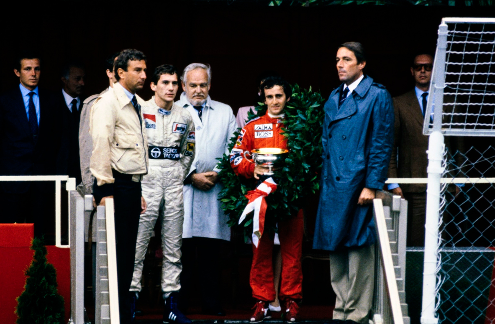
| Posição | Piloto | Equipe | Tempo |
|---|---|---|---|
| 1 | Alain Prost | McLaren - Porsche | 1:01'07.740 |
| 2 | Ayrton Senna | Toleman - Hart | + 7.446 |
| DQ | Stefan Bellof | Tyrrel - Ford | + 21.141 |
| 3 | René Arnoux | Ferrari | + 29.077 |
| 4 | Keke Rosberg | Williams - Honda | + 35.246 |
| 5 | Elio de Angelis | Lotus - Renault | + 44.439 |
| 6 | Michele Alboreto | Ferrari | + 1 volta |
| 7 | Piercarlo Ghinzani | Osella - Alfa | + 1 volta |
| 8 | Jacques Laffite | Williams - Honda | + 1 volta |
| AB | Riccardo Patrese | Alfa Romeo | Direção |
| AB | Niki Lauda | McLaren - Porsche | Rodada |
| AB | Manfred Winkelhock | ATS - BMW | Rodada |
| AB | Nigel Mansell | Lotus - Renault | Rodada |
| AB | Nelson Piquet | Brabham - BMW | Eletrico |
| AB | François Hesnault | Ligier - Renault | Eletrico |
| AB | Corrado Fabi | Brabham - BMW | Eletrico |
| AB | Johnny Cecotto | Toleman - Hart | Rodada |
| AB | Derek Warwick | Renault | Batida |
| AB | Patrick Tambay | Renault | Batida |
| AB | Andrea de Cesaris | Ligier - Renault | Batida |